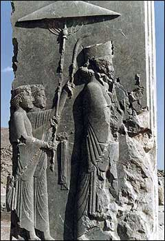
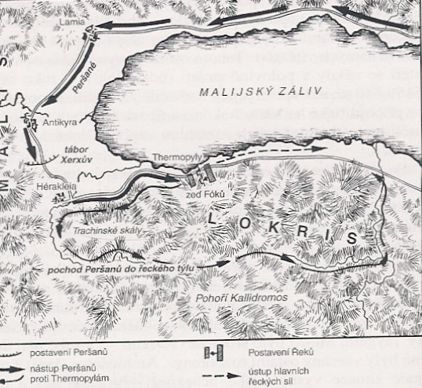

Píše se rok 480 pø. n. l. Perskı král Xerxes se znovu pokouší o invazi do Øecka. Jde ve stopách svého otce Dareia I., kterı pøed deseti lety pøi pokusu o toté ztroskotal. Athény a Sparta organizují obranu. Xerxes se blíí k "Horkım vratùm", jak zní v pøekladu název soutìsky Thermopyly. Jde o strategicky dùleitou soutìsku mezi severním a støedním Øeckem. V tuto chvíli jde o všechno.
Obrana Thermopyl je svìøena sedmi tisícùm tìkoodìncù. Dva tisíce z nich jsou Sparané vedení králem Leonidem I. a tøemi sty váleèníky jeho osobní stráe. Helénskı král ví, e jde o velmi riskantní vojenskou operaci. Proti nim bude stát sedmdesát tisíc Peršanù v èele s proslavenımi "nesmrtelnımi", jejich ztráty jsou ihned nahrazovány dalšími mui. Aby Leonidas zajistil pokraèování rodù, chce mít po svém boku pouze mue, kteøí mají potomky. On sám má malého syna.
Peršanùm se po dlouhé dny útok nedaøí. Potom jim však øeckı zrádce ukáe cestu, díky ní se podaøí obklíèit athénské a spartské oddíly. Situace se pro Øeky stává kritickou. Leonidas I. velí k ústupu. Pro ty, kteøí mu radí, aby se také pokusil uniknout, má rozhodnou odpovìï: "Nebylo by dùstojné opustit místo, které jsme pøišli bránit."
Vojáci z Athén a Sparty, kteøí jsou ještì naivu, nemají témìø ádnou nadìji na vítìzství. Vzdát se však nechtìjí. Kdy je Xerxes vyzve, aby sloili zbranì, Leonidas I. mu odpovídá: "Pojïte si pro nì!" Ani jeden ze tøí set vojákù nepøeil. Jejich obì však zdrela postup Peršanù a umonila spojencùm evakuovat Athény a zformovat námoøní flotilu k vítìzné bitvì u Salaminy.
Thermopyly dostaly své jméno podle vyvìrajících teplıch sirnıch pramenù, u nich vznikly malé termální láznì. Kromì novodobého památníku u silnice najdeme ještì na pahorku, kde probíhala poslední fáze boje, prostou pamìtní desku se slavnım epigramem od Simonida. Jeho èeskı pøeklad je následující:
"Poutníèe, zvìstuj Lakedaimonskım, e my tu mrtvi leíme, jak zákony kázaly nám."
| Rekapitulace: | ||
|---|---|---|
| Sparta | Persie | |
| Velitelé: | Leonidas | Xerxes I. |
| Síly: | 300 Sparanù a spojenci, celkem 7000 muù | perská armáda, asi 300 000 muù |
| Ztráty: | asi 2000, vèetnì všech 300 Sparanù | 5000-25 000 muù |
Øeckı básník Simónidés z Keu sloil na poèest Sparanù padlıch v bitvì svìtoznámı epitaf, kterı byl vyryt do kamene na místì, kde byli pohøbeni: ? ????', ????????? ???????µ?????? ??? ???? ???µ???, ???? ?????? ??µ??? ?????µ????. Ó xein', angellein Lakedaimoniois hoti téde keimetha tois keinón rhémasi peithomenoi. Jdi, poutníèe, a zvìstuj Lakedaimonskım e my tu mrtvi leíme, jak zákony kázaly nám.
Tento nápis je vyryt i na novém kameni z roku 1955. Ruskin o tìchto verších prohlásil, e jde o nejvznešenìjší vırok, jakı kdy èlovìk vyslovil.
V moderní dobì byl na místì vztyèen novı monument, zvanı Leónidùv, na poèest padlého spartského krále. Je na nìm vyryta jeho odpovìï Xerxovi na vızvu, aby se Øekové vzdali a odevzdali zbranì.
Byla struèná: Molón labe! (èesky: Pojï si pro nì!)
Historie ještì zaznamenala dvì epizody.